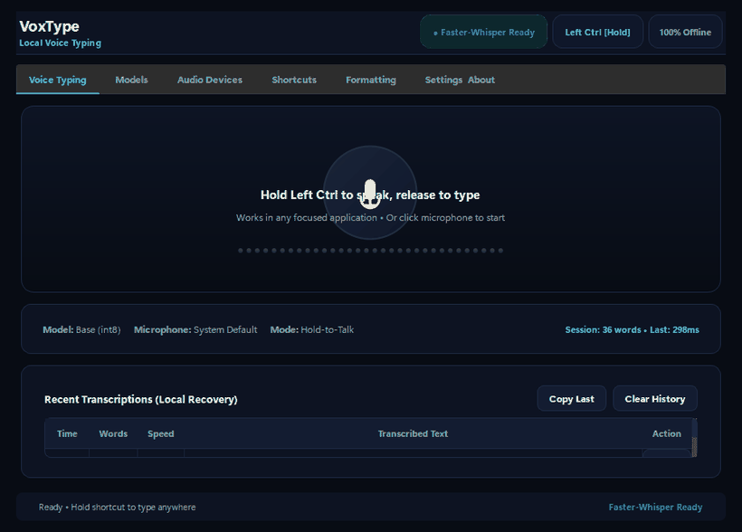
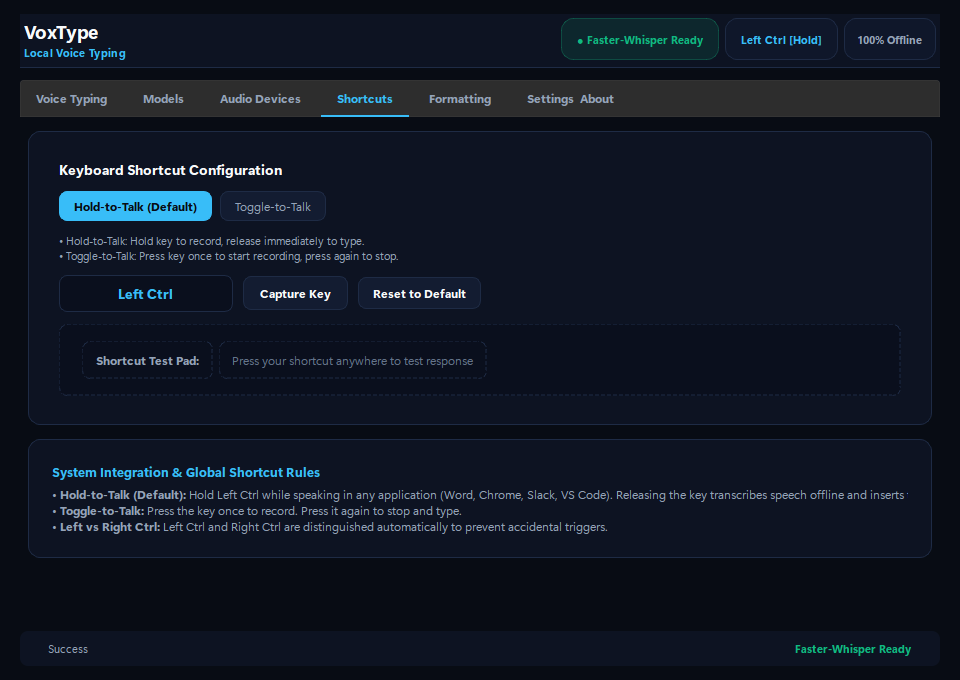
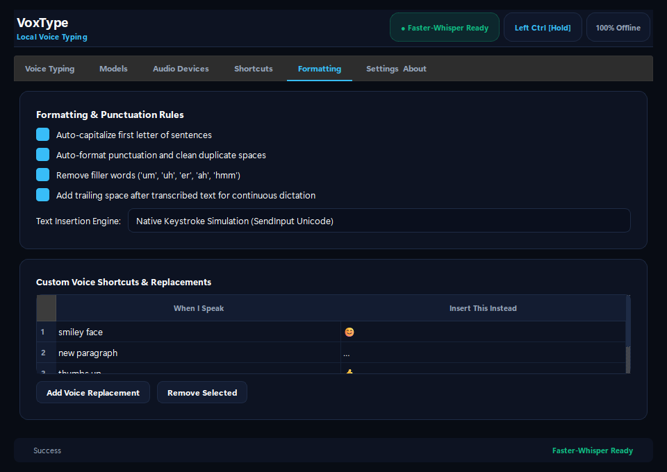
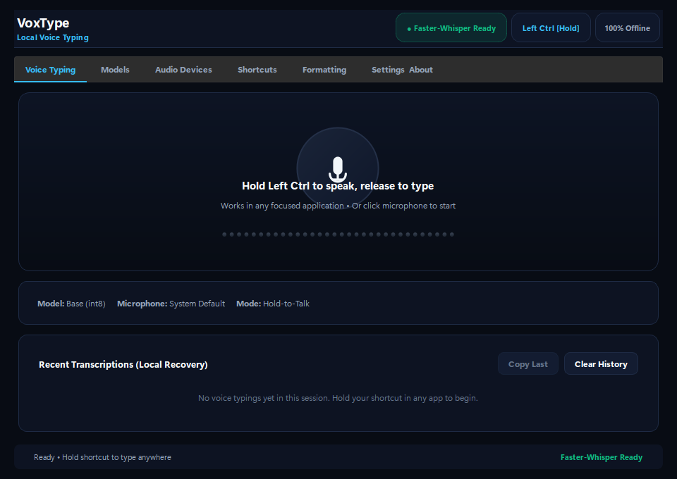

Voice typing that feels like
part of your operating system.
Hold Left Ctrl in any desktop application to speak. Release to transcribe locally and type directly at your active cursor. Powered by Faster-Whisper with sub-second latency, zero cloud dependencies, and complete privacy.
pip install -e .

Experience Push-to-Talk in Your Browser
Hold the microphone button below (or press Space) to simulate speaking. Release to see Faster-Whisper type text into the live editor.
Built for Speed, Reliability & Absolute Privacy
Every layer of VoxType is designed with low-level operating system integration to provide zero-friction dictation without cloud subscriptions.
Physical Modifier Discrimination
VoxType hooks low-level Windows keyboard events to distinguish physical Left Ctrl (VK_LCONTROL = 162) from Right Ctrl (VK_RCONTROL = 163). Use Left Ctrl freely for Hold-to-Talk without disrupting your browser, code editor, or terminal hotkeys.

100% Offline Privacy
All speech recognition runs strictly on your local machine using CTranslate2 Faster-Whisper. Zero audio data is recorded to disk, zero telemetry is gathered, and no cloud APIs are contacted.
✓ Zero Audio Retention in RAM
✓ Air-Gapped Workstation Safe
Native Text Injection
Types directly into any application (VS Code, Word, Chrome, Slack, Discord, Notepad) via Win32 SendInput Unicode simulation, with non-destructive clipboard restore fallback.
Non-Focus-Stealing Overlay
A compact 310x52 floating indicator appears on screen during recording with live waveform feedback and elapsed time, engineered with WA_ShowWithoutActivating so your active cursor never loses focus.
Microphone VU Calibration
Built-in live VU meter and permission diagnostics allow real-time calibration of input levels and seamless hot-swapping between USB interfaces and built-in mics.
Smart Post-Processing & Custom Voice Shortcuts
Clean up raw speech automatically with sentence auto-capitalization, punctuation normalization, and automatic elimination of spoken filler words ("um", "uh", "ah"). Define custom spoken replacements (e.g., speak "smiley face" ➔ insert 😊, speak "new paragraph" ➔ insert \n\n).

The 4-Stage Voice Typing Engine
Engineered from the ground up for sub-second push-to-talk response times on commodity consumer hardware.
Global Hook
A low-level Windows keyboard hook intercepts Left Ctrl key-down events across the entire OS without stealing active window focus.
Audio Stream
A high-precision 16 kHz mono float32 audio stream records directly into a circular memory buffer while streaming RMS levels to the waveform.
Local Inference
Upon key release, audio frames are passed to Faster-Whisper using CTranslate2 int8 quantization, utilizing all available CPU threads.
Native Injection
Transcribed text is cleaned, formatted, and injected at the active cursor position in your target window in under 400 milliseconds.
Faster-Whisper Model Variants
Choose the model that matches your hardware and workload. Download, switch, or remove models directly within VoxType.
| Model Variant | Disk Size | RAM Usage | Measured Latency | Accuracy | Recommended Hardware |
|---|---|---|---|---|---|
| Tiny | ~75 MB | ~500 MB | < 200 ms | Good | Older laptops, low-power quad-cores |
| Base DEFAULT | ~145 MB | ~800 MB | ~300 ms | Very Good | Balanced everyday voice typing on any modern PC |
| Small | ~480 MB | ~1.5 GB | ~600 ms | High | Technical coding, complex terminology |
| Medium | ~1.5 GB | ~3.5 GB | ~1.2 s | Excellent | Multilingual dictation, 8+ core CPUs |
| Large-v3 | ~3.1 GB | ~6.0 GB | ~2.5 s | State of the Art | High-end workstations & GPUs |
Genuine Application Screen Captures
Every screenshot is captured directly from the running VoxType PySide6 desktop application. Click any image to view in full resolution.

Install VoxType in Minutes
Get up and running locally with Python 3.10+ on Windows or Linux.
git clone https://github.com/CodeByArnob/VoxType.git
cd VoxType
python -m venv .venv
.venv\Scripts\activate
pip install -e .
sudo apt update && sudo apt install -y python3-venv libasound2-dev
git clone https://github.com/CodeByArnob/VoxType.git
cd VoxType
python3 -m venv .venv
source .venv/bin/activate
pip install -e .
pip install --upgrade pip
pip install -e .
python run.py
# or run directly via entry point:
voxtype
Frequently Asked Questions
Everything you need to know about VoxType's offline engine, security, and desktop integration.
VK_LCONTROL (162) from VK_RCONTROL (163). This ensures Right Ctrl remains completely free for your regular shortcuts. You can also customize the shortcut to any key (e.g. F8, F9, Alt+Space) in the Shortcuts tab.
GetForegroundWindow / SetForegroundWindow) and injects text at the active cursor using native Unicode SendInput keystroke simulation. If an application blocks direct keystroke simulation, VoxType seamlessly uses a non-destructive clipboard paste fallback (restoring your previous clipboard contents in milliseconds).
int8). On a standard modern CPU (4+ cores), the default Base model transcribes speech with sub-second latency (typically ~300ms).